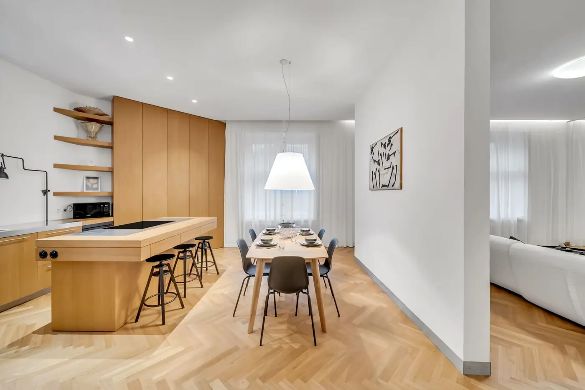

5-izbová mestská rezidencia na prestížnej adrese
Na predajMoyzesova, Bratislava-Staré Mesto, okres Bratislava I, Slovensko
Popis
Na jednej z najreprezentatívnejších adries bratislavského Starého Mesta vznikol priestor, ktorý spája historickú hodnotu s moderným komfortom.
Päťizbový byt na Moyzesovej ulici predstavuje výnimočnú kombináciu architektúry, priestoru a atmosféry, ktorá sa dnes objavuje len zriedka.
Architektúra s rešpektom k minulosti Byt sa nachádza v secesnom dome z roku 1903 a prešiel kompletnou rekonštrukciou pod vedením architekta Iľju Skočeka.
Každý zásah bol realizovaný s dôrazom na zachovanie autenticity a zároveň na vytvorenie nadčasového interiéru.
Pôvodné drevené parkety, vysoké stropy a remeselné detaily zostávajú dominantou priestoru, zatiaľ čo moderné prvky prirodzene dopĺňajú celkový charakter bývania.
Celková výmera 155 m² poskytuje veľkorysý priestor bez kompromisov.
Dispozícia navrhnutá pre život Interiér je rozdelený na dennú a nočnú zónu s dôrazom na plynulosť a funkčnosť.
Denný priestor tvorí otvorená kompozícia kuchyne, jedálne a obývacej izby s krbom.
Tento priestor pôsobí reprezentatívne aj intímne zároveň.
Hlavná spálňa disponuje vlastnou kúpeľňou a šatníkom, čím vytvára súkromnú zónu oddelenú od zvyšku bytu. Ďalšie tri izby ponúkajú flexibilitu využitia – ako detské izby, pracovňa alebo hosťovské miestnosti.
Samozrejmosťou je druhá kúpeľňa, samostatná toaleta a technická miestnosť.
Komfort bez viditeľného kompromisu Byt sa predáva čiastočne zariadený, pričom zariadenie rešpektuje architektúru priestoru a jeho charakter.
Technický štandard zahŕňa vlastný plynový kotol, prípravu na klimatizáciu a zabezpečovací systém.
K bytu prislúcha pivnica, povalový priestor a predzáhradka vo vnútrobloku, ktorá poskytuje súkromie a ticho v centre mesta.
Lokalita ako hodnota Moyzesova ulica patrí medzi najvyhľadávanejšie adresy v Bratislave.
Bezprostredná blízkosť Prezidentského paláca, Grassalkovichovej záhrady či Medickej záhrady vytvára jedinečné mestské prostredie s dostatkom zelene.
V pešej dostupnosti sa nachádza kompletná občianska vybavenosť, kultúrne inštitúcie aj kvalitná gastronómia.
Lokalita zároveň ponúka výbornú dostupnosť v rámci mesta.
Parkovanie K bytu prislúcha parkovacie miesto vo dvore.
Cena: 990.000 EUR Nehnuteľnosť, ktorá neponúka len bývanie, ale dlhodobú hodnotu, charakter a výnimočnosť.